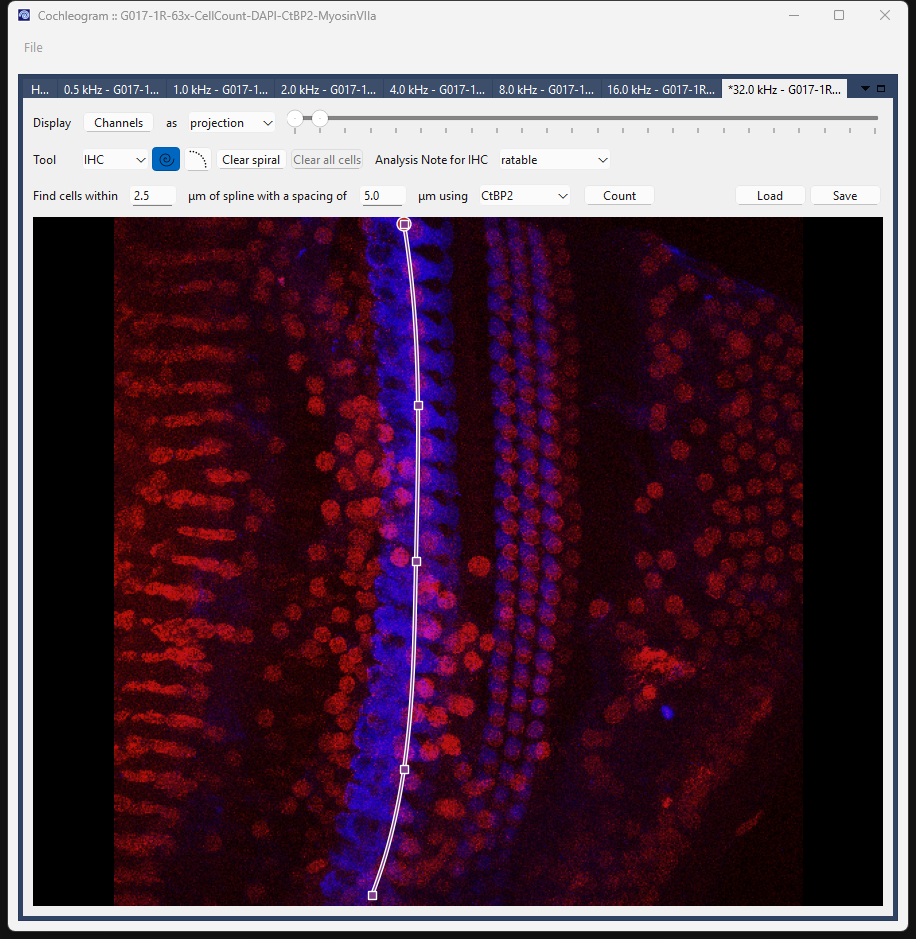
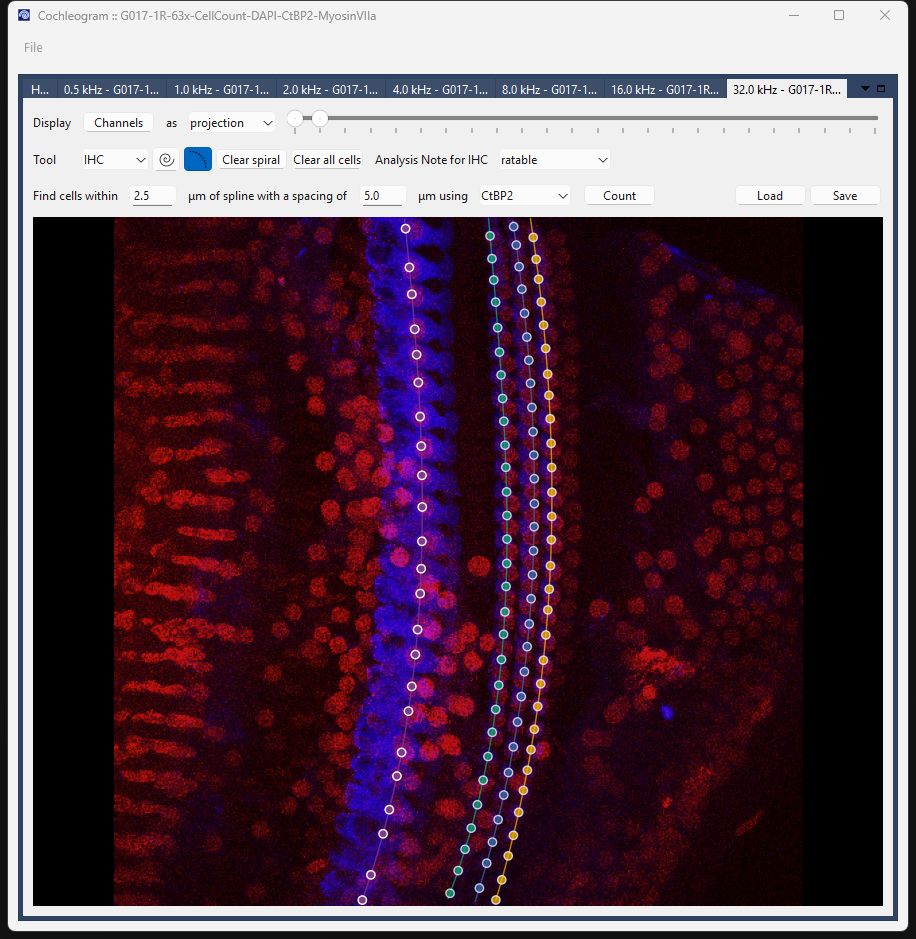

Cell Counting Workflow¶
Use this workflow when you have imaged specific cochlear regions at high magnification (typically 63×) to count hair cells at defined frequencies.
Goal: count IHC and OHC cells per 100 µm at each imaged frequency location.
The spiral serves two purposes in this workflow: it guides the automated cell-detection algorithm, and it provides the total path length used to calculate cells per 100 µm.
File naming¶
Name each tile with its target frequency using the <n>p<d>_kHz pattern:
Cochleogram reads the frequency from the filename and associates it with that tile.
Step 1: Load the data¶
- Open the File menu.
- Choose ROI scans.
- Navigate to your file or folder.
Each tile loads into its own tab, labeled by frequency.
Step 2: Trace spirals through each row¶
Switch to Spiral mode by pressing S.
Unlike the frequency map workflow, you need a separate spiral for every row of cells — IHC and all three OHC rows. The spiral length for each row is used to normalize the cell count.
Work through each row in turn:
| Key | Row |
|---|---|
I |
Inner Hair Cells (IHC) |
1 |
Outer Hair Cells row 1 (OHC1) |
2 |
Outer Hair Cells row 2 (OHC2) |
3 |
Outer Hair Cells row 3 (OHC3) |
For each row:
- Select the row with the key above.
- Right-click to place nodes along that row. You need at least 4 nodes.
- The app fits a smooth B-spline through your nodes.

IHC spiral traced at 32 kHz. Square markers = nodes you placed; the curve fits through them automatically.Repeat for OHC1, OHC2, and OHC3.
Step 3: Detect cells¶
Switch to Cell mode by pressing C.
Automatic detection:
For each row:
- Select the row (
I,1,2, or3). - Set the search parameters in the toolbar:
- Find cells within — how far from the spline to search (µm)
- with a spacing of — minimum distance between detected cells (µm)
- using — which channel to detect on (typically CtBP2 for IHC, MyosinVIIa for OHC)
- Click Count.

Cells detected across all rows. White circles = IHC; colored dots = OHC1–3.Manual corrections:
| Action | Result |
|---|---|
| Right-click | Add a cell |
| Shift+right-click | Remove a cell |
Run Count and correct for each row before moving on.
Step 4: Mark extra (supernumerary) OHCs¶
Occasionally a fourth row of outer hair cells appears that does not fall cleanly along OHC1–3. These are supernumerary cells and should be counted separately.
Press 4 to select the Extra row, then right-click to mark each supernumerary cell individually. These cells are tracked independently and do not affect the OHC1–3 counts.
Step 5: Save¶
Press Ctrl+S or go to File → Save analysis.
Keyboard shortcuts¶
| Key | Action |
|---|---|
S |
Spiral mode |
C |
Cell mode |
I |
Select IHC row |
1 / 2 / 3 |
Select OHC row 1 / 2 / 3 |
4 |
Select Extra (supernumerary) row |
Ctrl+S |
Save analysis |
Esc |
Cancel in-progress action |
Troubleshooting¶
Count marks noise or misses cells. Adjust the search width and spacing before running. A tighter width (e.g., 2.5 µm) reduces false positives; a smaller spacing value catches closely-packed cells. Clean up the remainder manually.
I have cells that fall between the standard OHC rows.
Use the Extra row (4) for supernumerary OHCs. Do not force them onto OHC1–3.
A row is unusable (e.g., missing tissue, poor histology). Select that row and mark it as Unratable in the toolbar. This excludes that specific row from counts. Each row has its own Unratable flag — marking IHC as unratable does not affect OHC counts, and vice versa.